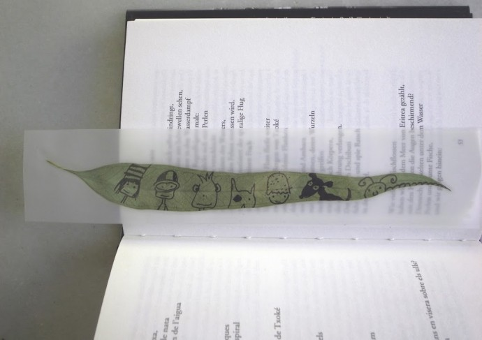

Facebook
Pinterest
Instagram
ES
EN
DE
☰ Menú
Inicio
La casa
Accesorios
Decorar
Instrucciones
Ilustración
Cantimploras personalizadas
Cuaderno de manualidades y actividades 01
App Not Online Anymore
Blog
Fiestas
Navidad
Pascua
Halloween
Carnaval y disfraces
San Valentín
Cumpleaños
Día de la Madre/Padre
Vuelta al cole
Estaciones
Primavera
Verano
Otoño
Invierno
Qué hacer
Juguetes
Juegos
Imprimibles
Recetas y comida
Decoración
Pintar
Experimentos
Al aire libre
Aprender
Animales
Regalos y joyas
Construir y trucos
Otras manualidades
Material
Papel
Cartón
Rollos de papel
Reciclaje
Piedras
Hojas y naturaleza
Tela, coser y tejer
Inicio
›
Blog
›
regalo
regalo
Etiqueta
Ocasión
Jabonera bola de nieve
Actividad
Gatos en palitos
Material
Papel de regalo con la edad
Material
Cajitas de regalo
Papel
Una sorpresa
Letras
Lápices forrados de periódico
Material
Llavero de corcho que flota
Ocasión
Marcapáginas de cintas de regalo
Hojas
Marcapáginas de eucalipto

← Más recientes
Página 2 / 2